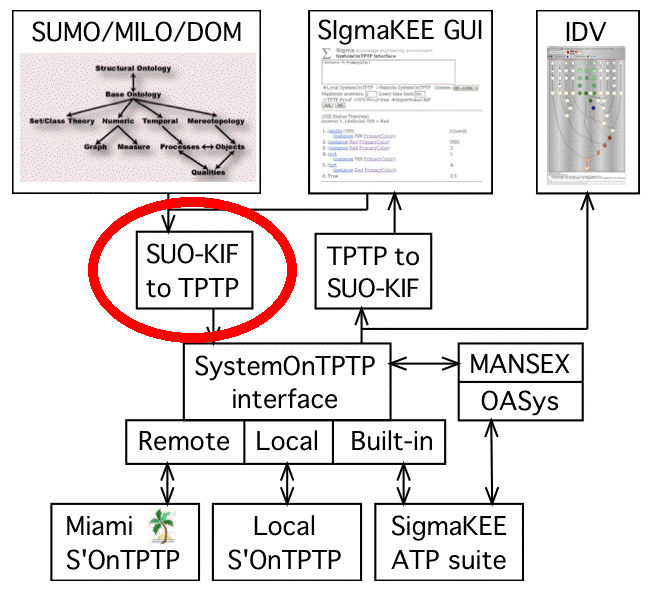

SUO-KIF to TPTP Translation

Motivation
- SigmaKEE developed to support KBs written in SUO-KIF
- ATP developed not to support SUO-KIF
- First-order ATP often uses TPTP format
- KBs translated to TPTP when loaded
- Queries translated to TPTP at runtime
Translation
- Largely syntactic, e.g., prefix to infix, naming standards, etc.
- Addition of sortal antecedents
- Expansion of sequence variables
- Wrapping for variable predicates and functors
- Quoting embedded formulae (higher-order)
- Documentation omitted